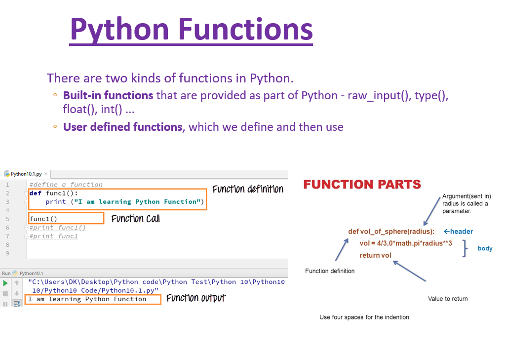
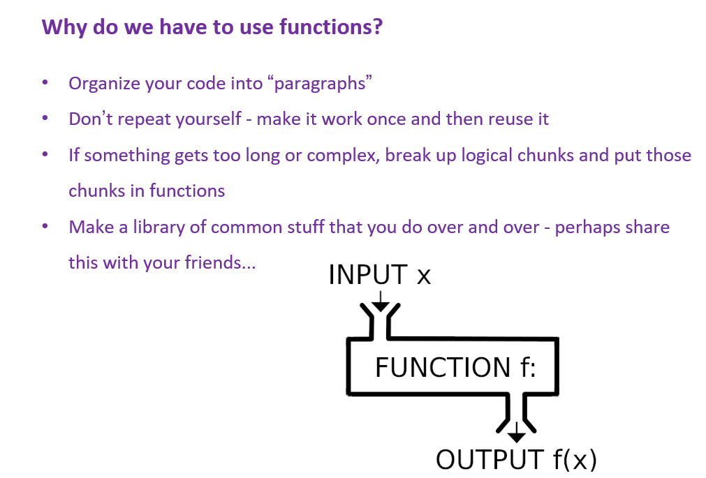
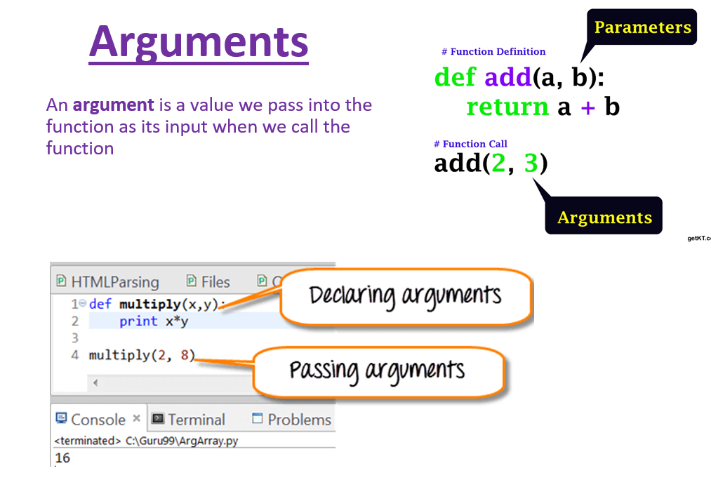
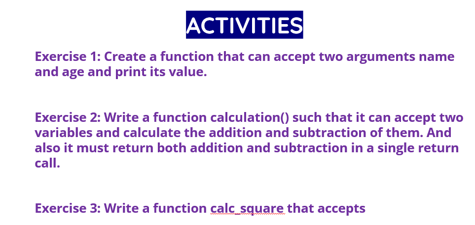

Page 15 of 16 · draft
Functions




Activities
4Activity 4
FIBONACCI: Write a program that asks the user how many Fibonnaci numbers to generate and then generates them. Take this opportunity to think about how you can use functions. Make sure to ask the user to enter the number of numbers in the sequence to generate.(Hint: The Fibonnaci seqence is a sequence of numbers where the next number in the sequence is the sum of the previous two numbers in the sequence. The sequence looks like this: 1, 1, 2, 3, 5, 8, 13, …)
5Activity 5
PASSWORD GENERATOR: Write a password generator in Python. At the beginning, the admin will create an username and password, then we will show a login screen where the have to type his/her user and password. After 3 wrong passwords, a message will appear "ACCOUNT BLOCKED!"
Hint: when user types the password, in the screen you will see *, not the letters. Password must contain at least 8 caracters, numbers and a symbols.
6Activity 6
Write a function that converts hours into seconds.
7Activity 7
Write a function that takes the base and height of a triangle and return its area.